edge treatment · occluder fade · zoom comparison · edge-keying cleanup — refresh for the latest copies · the live proto is at /iso-proto.html (F = edge modes, -/= = zoom, G = debug)
the abyss fix — same corner, three modes (F cycles in-game)
Ground skirt: five cells of border material baked past the map edge, rolling into dusk fog. Interiors keep their diorama edge.
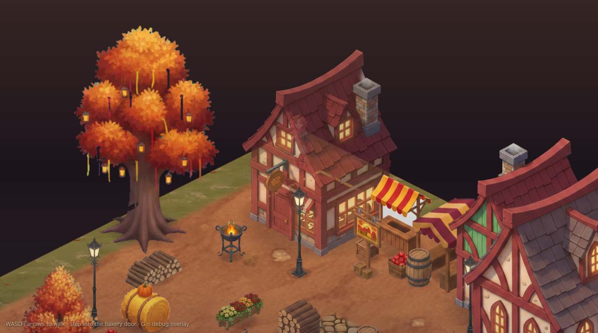
off — the old abyss
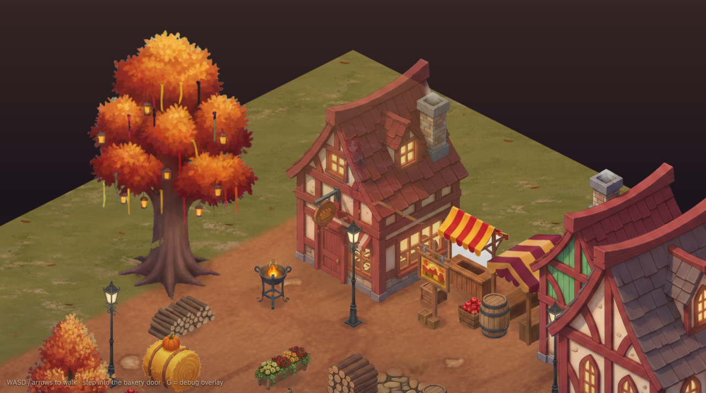
skirt only
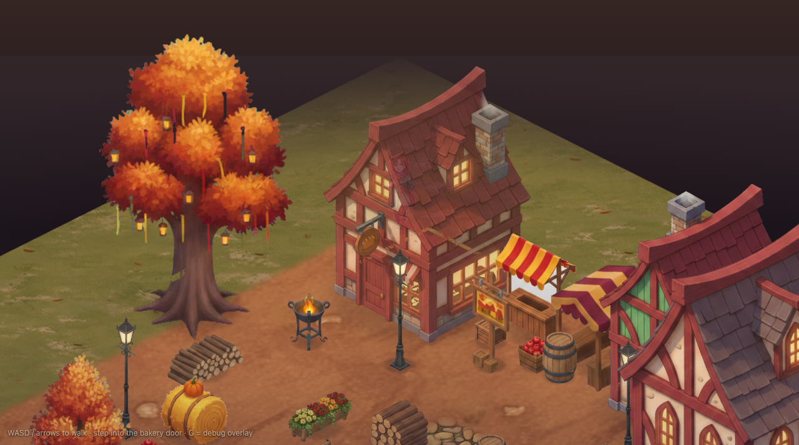
skirt + fog (default)
occluder fade
Props fade to 45% only when they genuinely cover the character (opaque-pixel test); buildings to 75%; the interior near-wall to 50% at the exit. Shadows and the G overlay never fade.
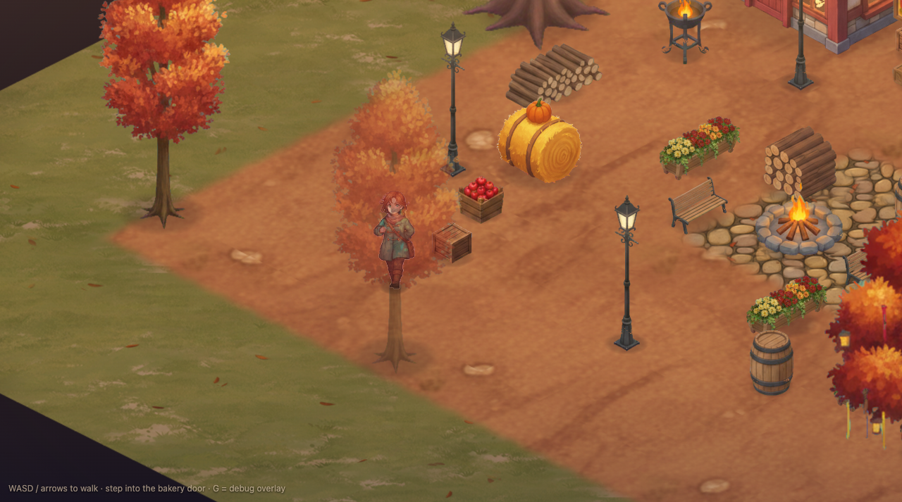
behind the tree — faded to 45%, Vesper tracked
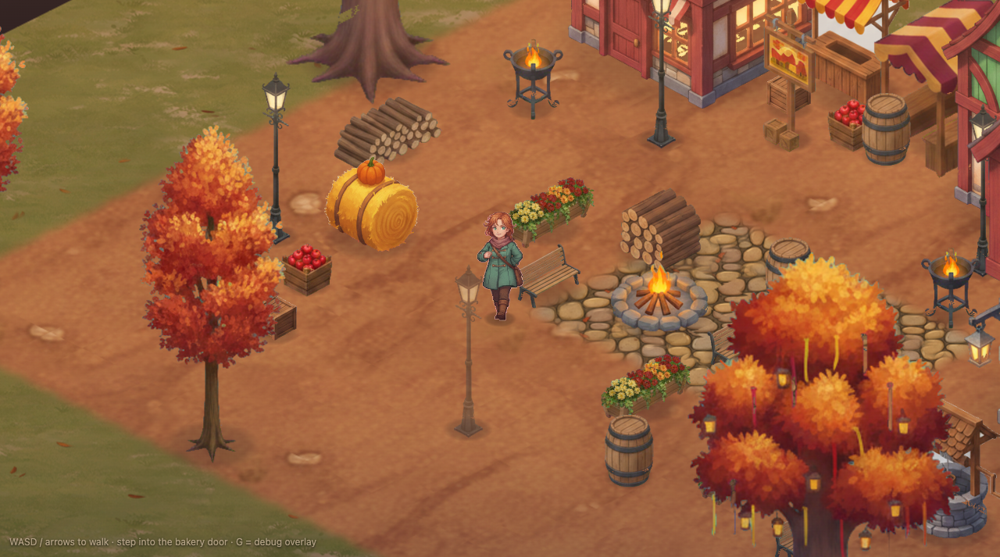
stepped out — recovered to opaque
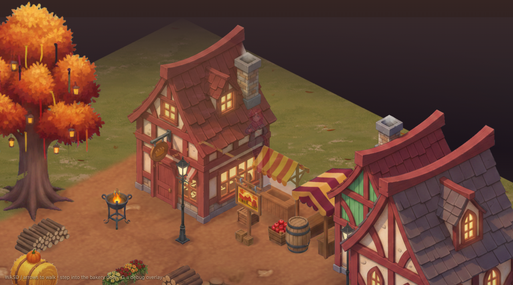
behind the bakery — gentle 75%
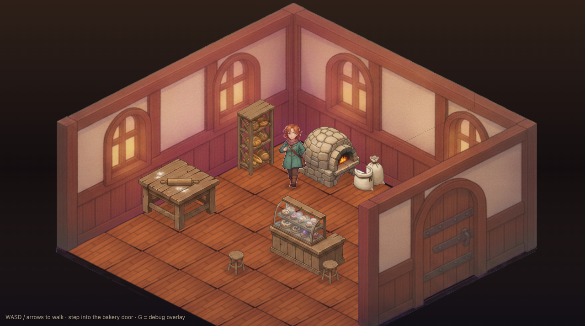
deep in the room — walls solid
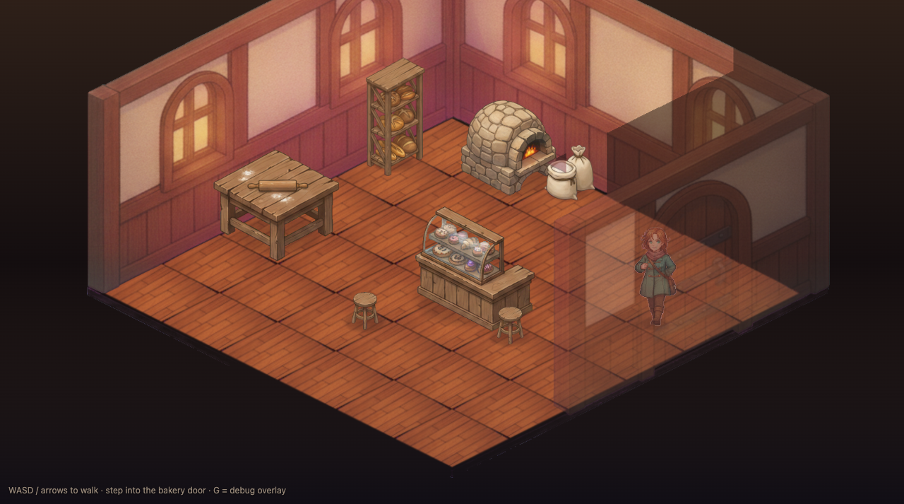
at the exit — near wall at 50%, no more vanishing
camera zoom (-/= in-game, default 0.8)
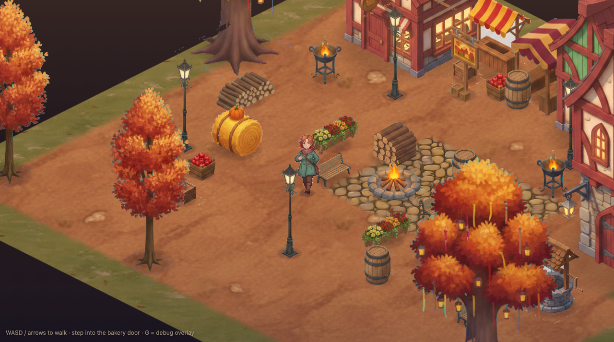
0.8 — the new default
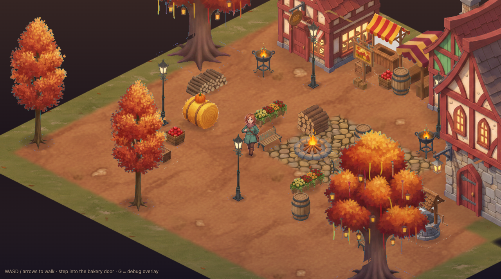
0.7 — wider still
edge-keying cleanup (previous round)
Soft alpha + despill + speck removal: the magenta "boxes" were the registration pads' anti-aliased rings — gone catalog-wide; teal halos cut 95–98%.
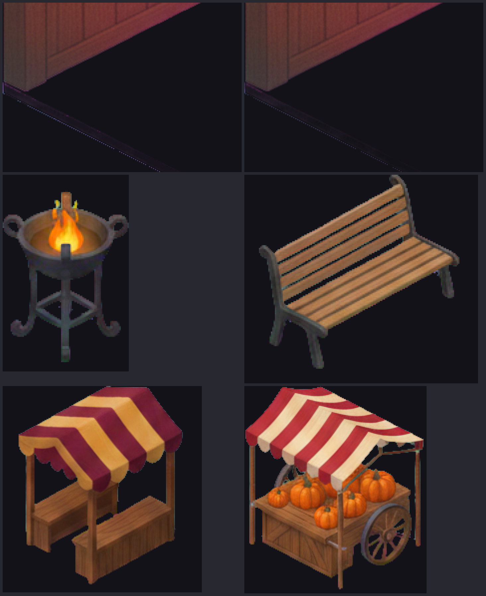
cleaned edges on dark background
full before/after contact sheet (large)
style exploration — three world treatments, Vesper anchored in each
Same five assets, same scene, same camera — only the rendering differs. A = incumbent painterly · B = cel-painterly pushed toward Vesper's own rendering · C = gouache storybook. All B/C assets passed the full pipeline gates. Agent's ranking: C for distinctiveness, B for purest harmony, both beat A.
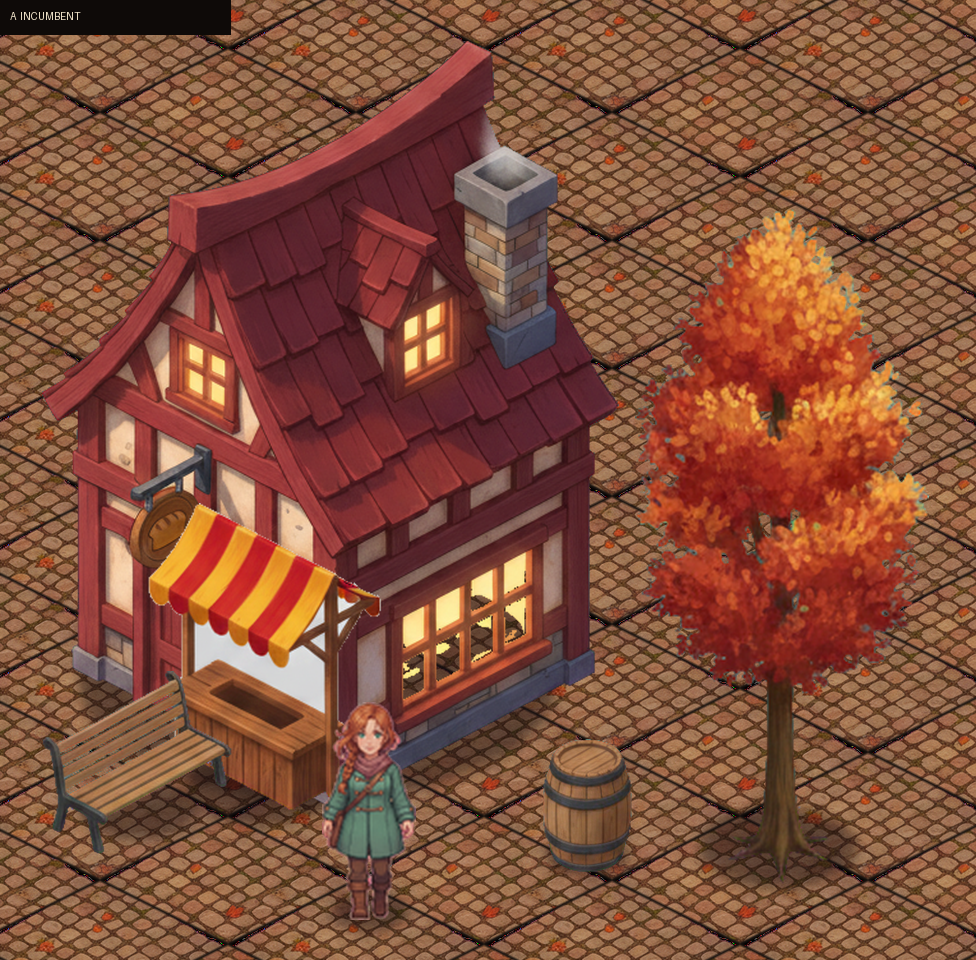
A — incumbent (baseline)B — cel-painterly, Vesper-matched
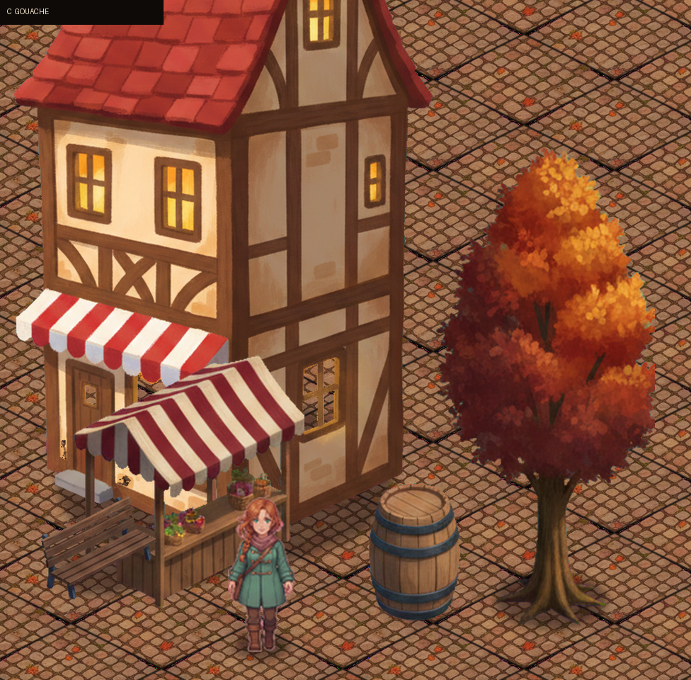
C — gouache storybook
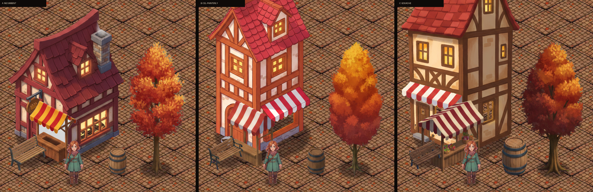
side by side
A close-up — barrel · tree edge · facadeB close-upC close-up